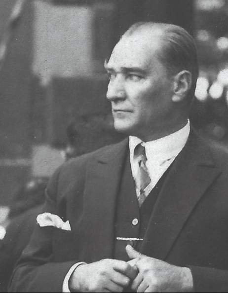
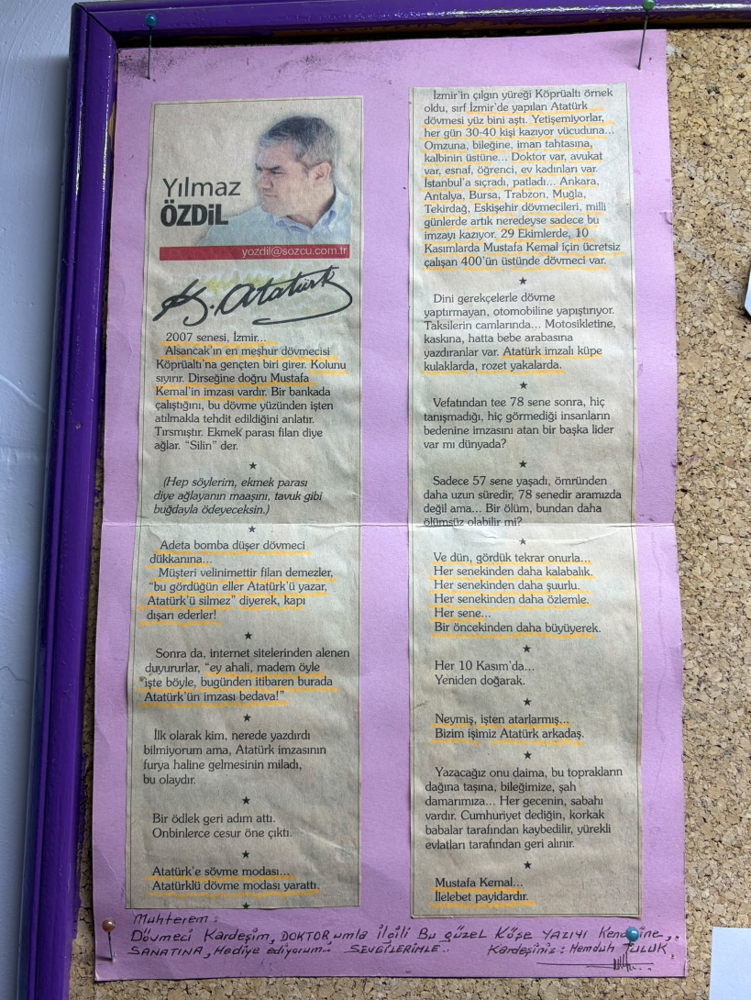

Hijyen & Malzeme
Kullanılan malzemeler tek kullanımlıktır. Paketler uygulama öncesinde sizin yanınızda açılır.
29.10.2007 tarihinden bu yana Köprüaltı'nda ücretsiz olarak uygulanan Atatürk imzası geleneği, sadece bir dövme kampanyası değil; görünür bir saygı, hafızada kalan bir tavır ve yıllardır devam eden bir duruş biçimi.

“Bütün ümidim gençliktedir.”
Bu sayfanın taşıdığı ruh da tam olarak buna dayanıyor: hafızayı, tavrı ve emaneti gelecek kuşaklara aktarmak.
— Mustafa Kemal AtatürkBu geleneğin çıkış noktası, bir müşterinin taşıdığı Atatürk imzasını iş ve sosyal baskılar nedeniyle sildirmek zorunda kalmasıydı. Köprüaltı bu hikâyeyi geri çekilerek değil; tam tersine daha görünür bir cevap vererek karşıladı.
O günden beri Atatürk imzası isteyenlere ücretsiz uygulama yapılması, stüdyonun kendi içinde büyüttüğü bir söz haline geldi. Amaç sansasyon değil; hatırlatıcı bir iz bırakmak, isteyen herkesin bu sembole ulaşabilmesini sağlamak.

Bu görsel, stüdyonun duvarında duran gerçek bir kupür. İçinde hem dönemin heyecanı hem de yıllar boyu devam eden bir geleneğin tanıklığı var.
“Neymiş, işten atarlarmış... Bizim işimiz Atatürk arkadaş.”
Final sürümde burayı daha temiz taranmış bir görselle ve yazının kısa dökümüyle destekleyeceğiz; şimdilik ruhunu bozmadan arşiv halinde taşıyoruz.
Çünkü bazı işler sadece teknik değildir. Bazı dövmeler bir estetik tercih olmanın ötesinde; hafıza, bağlılık ve kişisel duruş taşır. Köprüaltı'nın Atatürk imzası uygulaması da tam olarak bu yüzden yıllardır yaşıyor.
Buradaki yaklaşım sert sloganlar kurmak değil; isteyen insana, kendi bedeninde taşıyacağı anlamlı bir işaret için temiz, özenli ve ulaşılabilir bir alan açmak. Köprüaltı bu geleneği tam da bu yüzden devam ettiriyor.
Profesyonel çekimler geldiğinde bu sayfa görsel olarak daha da güçlenecek. Şimdilik içerik omurgasını kuruyoruz.
Kullanılan malzemeler tek kullanımlıktır. Paketler uygulama öncesinde sizin yanınızda açılır.
Atatürk imzası 6 ayrı boyutta uygulanabilir; yerleşim ve ölçü randevuda birlikte netleştirilir.
Bu uygulama gelenek gereği ücretsizdir. Amaç ticari değil, sembolik bir katkıdır.
Uygulama için stüdyo ile iletişime geçebilir veya randevu sayfasından talep bırakabilirsiniz.